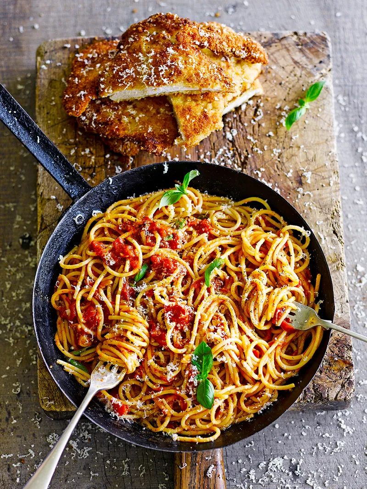

Chicken milanese with spaghetti

Ingredients
- 2 cloves of garlic
- ½ a bunch of fresh basil
- olive oil
- 1 x 400 g tin of plum tomatoes
- 2 x 150 g skinless free-range chicken breasts
- 100 g plain flour
- 2 large free-range eggs
- 100 g breadcrumbs
- 30 g Parmesan cheese
- 150 g dried spaghetti
Description
- Peel and finely slice the garlic. Pick the basil leaves, then finely chop the stalks.
- Heat a splash of oil in a medium saucepan over a medium heat. Add the garlic and basil stalks and cook for 2 minutes, or until golden.
- Tip the tinned tomatoes into the pan and squash them down with the back of a spoon. Fill the empty tomato tin with water and pour this in too. Season and simmer for 30 minutes, or until reduced, glossy and thick.
- Place the chicken breasts on a board and cover with a double layer of clingfilm. Bash with a saucepan to flatten them to 5mm thick.
- Tip the flour into one bowl, then crack and beat the eggs in a second bowl. Add the breadcrumbs to a third, finely grate in half of the Parmesan, then shake to combine.
- Coat the chicken in the flour, then the egg and finally in the cheesy breadcrumbs, until thoroughly coated.
Home page